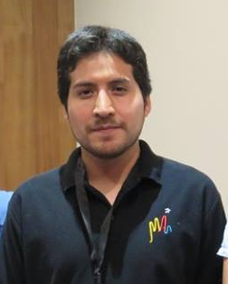

Ósmar Rodríguez Suárez
Email:
olrodrig@gmail.com
Phone: +56-2-27703926
Address:
Universidad Andrés Bello
,
Astronomy Group
Fernandez Concha 700
759-1538, Las Condes
Santiago, Chile
Scientific Interests & Research
Type II Supernovae (SNe II) as distance indicators
Host galaxy extinction of SNe II
Ejecta-CSM interaction in SNe II
Observations at optical and near-IR wavelengths
Statistical analysis
My CV
(pdf)
List of Publications
Useful tools
Automated Loess Regression (ALR)
SNII Explosion Time from Optical Spectra (ETOS)